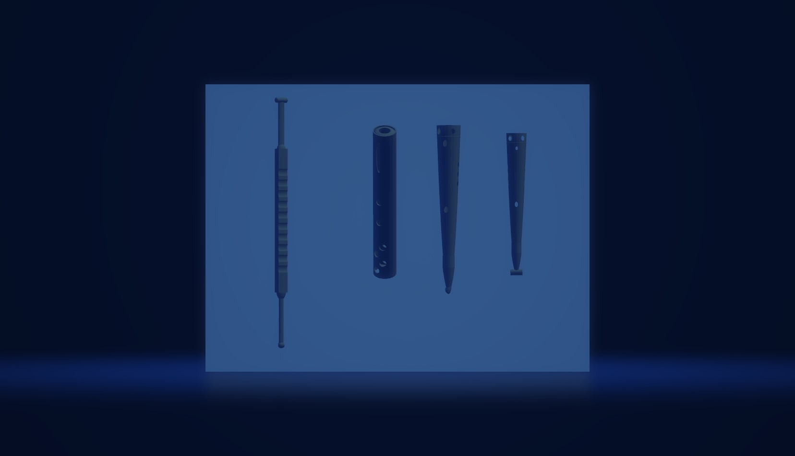

Biomedical Surgical Instrument R&D
I had the opportunity to independently research and fully design a project for an ophthalmologist, receiving funding and the materials to pursue it. The goal of the project was to determine the feasibility of using 3D printing technology to create surgical instruments for ophthalmology, and to successfully design and print a scleral depressor and a proprietary light cap with custom ends. Both instruments were to be used in surgery in and around the eye. The project was composed of three main parts: researching and designing the instruments, conducting initial development, and iterating through rapid prototyping. An important aspect of the project was researching the most favorable 3D printer to use for the project. After evaluating several options, I concluded that the Formlabs 3B+ was the optimal choice due to its high precision capabilities. This was crucial as the instruments needed to be extremely precise, particularly when working in the eyes with surgical tools. Another aspect of the research was determining the best type of resin to use. I evaluated several options and ultimately concluded that Biomed Clear resin was the best choice for our needs. This resin had the necessary biocompatibility and strength required for use in a surgical setting. This research was crucial in ensuring the success and more importantly the safety of the project. Initial testing and design were crucial steps in the project. I went through rapid prototyping to quickly evaluate and iterate on designs. I met regularly with MD residents to gather feedback and adjust the prototypes. Additionally, I conducted root cause analysis and DOE (Design of Experiment) on feedback from the residents to revise prototypes, using KPIs to measure success. This allowed me to identify and address any issues that arose during testing and make the necessary adjustments to improve the design. This iterative process was essential in creating surgical instruments that were both safe and effective for use in a clinical setting. It was extremely satisfying to see my designs come to life and be used in a real-world surgical setting. Seeing the positive impact that our work had on patients was a truly rewarding experience. As an ongoing consultant for the team composed of MD residents and masters students, I have the pleasure of continuing to be a part of this project and contribute to its success. One of the most notable achievements of the project was that, using DFMA and 3D printing technology, we were able to reduce manufacturing costs by over 90%. Another success of the project was documenting my research and findings. I authored several technical reports that included statistical analysis and visualization to present my work in a clear and accurate manner. These reports will be used to support an upcoming scientific paper and journal publication. Overall, the project was an immense success, and I am proud to have been a part of it.
Unfortunately, due to legal reasons, I am unable to provide you with high-quality renders of the instruments.